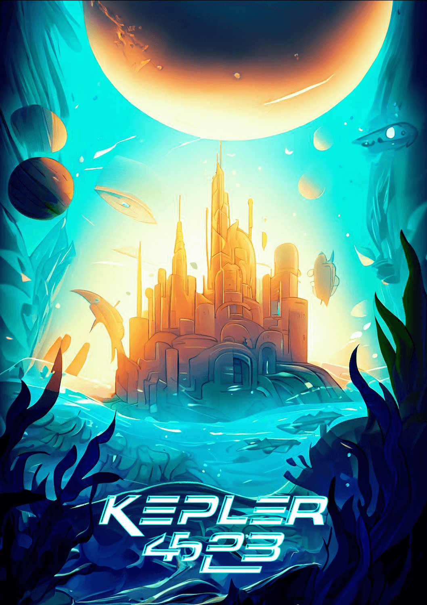
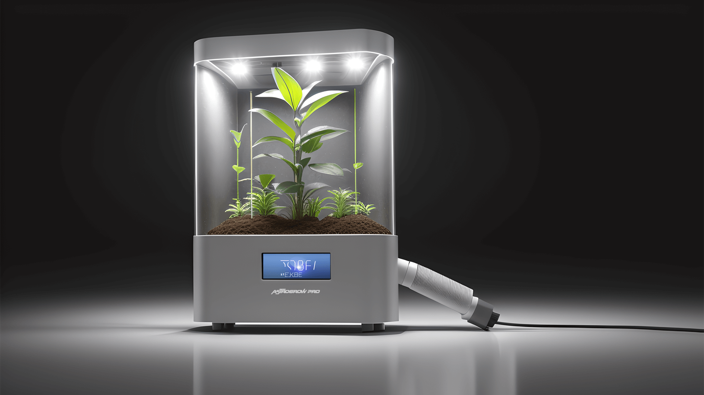

RESULTS
We started the first day by getting to know each other and getting a clear picture of the assignment. The assignment was to come up with a solution for another planet. Our planet was Kepler-452B. From here we looked for some background information about our planet. Here we found out that it consists largely of water and the pieces of land are very rocky. Little else was known, leaving us to fill in the details as we saw fit. From this, we threw together ideas of what we wanted the problem to be on our planet. The end result was that the creatures that live there (called Keppies) live underwater and cannot find or produce food there.
Before we had to start coming up with a solution, we had to make a travel poster to get a visual image of the planet. Since we had limited time, I used Bing's AI image generator to generate a poster.
As this image was too small, I used Adobe Generative fill to expand the image.
In the end, the group was divided into 4 different 'departments' and I ended up in the technology department together with 4 other students. Together, we used ideation techniques to come up with different ideas to tackle the planet's problem using technology.
Since I was the only person in our group from semester 6, I mainly took the lead and helped the other students where they needed help. Together, we produced the following result:
Solution:
Creating a plant growth booster for another planet involves a combination of advanced technology, biological science, and sustainable resource management. Such a prototype would need to address the unique challenges of extraterrestrial farming, including harsh environmental conditions, limited resources, and isolation from Earth.
The plant booster will be called AstroGrow Pro and it will facilitate sustainable plant growth by providing essential nutrients, regulating environmental conditions, and optimizing resource usage.
Since we had to pitch the idea at the end of the week, I used AI to generate a realistic version of our concept by using the right prompt. Out of this came the following image.
We used this image in the video pitch, which was allowed to last a maximum of 45 seconds. In this, I took on the task of editing this video.
CONCLUSION
We were placed in a group (planet) of 16 during the 'Common Grounds' project. This group was divided into four departments, where I joined the technology department. Together with three other students, we came up with a backstory, logo, poster, problem and solution. I took on the task of coming up with the concept of the logo, creating the poster using AI, brainstorming about a problem and visualizing a solution. I spent most of my time visualizing the artefact we came up with in a 45-second video.
What made this project difficult was creating a problem for a non-existent target group. Working in a large group with new people made it difficult to work together.
During this project, I learned how to create realistic digital prototypes in a short time using the right AI tools.
LEARNING OUTCOME
Learning outcome 6: Personal leadership
By reflecting on my own work and taking on the leadership role within the department group.
Learning outcome 7: Goal-oriented interaction
By participating in an international assignment and communicating with different people.